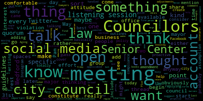
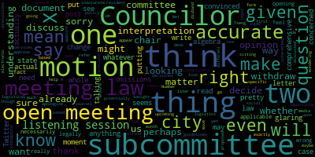

[Leming]: President services and public engagement committee meeting of Medford City Council clerk, please call the role.
[SPEAKER_09]: Present.
[Leming]: Resolution 24-015 offered by Councilor Tseng, resolution to discuss modernizing City Council communication and outreach strategy. I believe the only point on this was the discussion of the we have a motion to approve. Social media policy. Draft which was drafted, which was submitted by Councilor Lazzaro. Um, Councilor, do you have a. Take it away. If you have anything to present.
[Blake/Jasmine/Marcus]: Yes So I am happy to hear any
[Lazzaro]: want to consider adding that just came to me today was that we should mention, this is sort of an assumption, but it's probably best to include it in writing, is that in an effort to be proactive about our compliance with open meeting law, just to put in the policy that we would make sure not to have any Councilors not to have a quorum of Councilors replying on a thread on social media, because that could constitute an open meeting law violation. But that doesn't, it doesn't totally apply to what we would be talking about here, but it might help to just have it on the guidelines. So that could be one amendment we can add to it. But what this, what this basically outlines is that We could create social media accounts for the major social media, like Instagram, Twitter, Facebook. X, I guess, not Twitter. And we could have it be a city council. I don't have a Twitter, I don't know. So it could be a city council specific account, like the mayor's office has, a mayor's office specific account, but that doesn't cover city council specific business. And this way we could share it, things that are applicable to our work. Notifications about, important meetings that might be coming up, or listening sessions, which we'll talk about later in this meeting, that kind of thing. And this is just some broad guidelines about how those accounts would be handled. So I'm happy to make any adjustments, but this is just a starting point.
[Leming]: Any other Councilors? Councilor Callahan.
[Callahan]: I'll just say I did read through the whole thing. It seems pretty comprehensive. I don't see any glaring omissions or anything that I would change at this moment.
[Tseng]: Councilor Tseng. I wanted to thank you, Councilor Lazzaro, for working on this. I know this was previously on my docket of my long to-do list, and you volunteered to take it off my list. So that was very, very helpful. I'm, I think, very ecstatic to see that this is so comprehensive. I think it's very well done. The nuggets that I thought were particularly important legal language to put in, that language is in there, is in this draft. I think this is very helpful. I think it's very clear, which is what we need if we are to have a social media account. Thank you for your work.
[Leming]: Any comments from any of the councilors? Any comments from members of the public on this particular agenda item? Okay, seeing none, do we, I don't particularly have any comments on this. The draft looks good. I'd like to thank Councilor Lazzaro for her work on this. Just a question of procedure. So would we want, Councilor Lazzaro, it sounds like you had some recommended edits for it. So would- Yes.
[Lazzaro]: So I would suggest that we would add Um, maybe in the, um, maybe at the, at the end of the guide, the last section guidelines for official Medford city council use at a, at a bullet point that says no, a quorum of city councilors shall not comment on a thread on social media. which would constitute an open meeting law violation.
[Leming]: Okay. Councilor Callahan.
[Callahan]: I'm not convinced that that is accurate, and I don't want to put that in here in case it is not accurate. I think open meeting law is open meeting law, and we don't need to write our interpretation of open meeting law into this document, is what I would say.
[Lazzaro]: That's fine with me. I'm sort of being overzealous about it, so I'm comfortable with not.
[Callahan]: I mean, it is my understanding that I, as a city councilor, can post whatever I want on X, like I can say my opinion on X, and it doesn't mean that other city councilors cannot also state their opinions on, and by X, I actually mean X Twitter. I'm talking about the actual thing, not like a thing with the letter, not the algebra. So this is why I'm concerned, because if we're putting into this some interpretation of open meeting law that I think may not be applicable And it doesn't really matter whether I'm right or wrong. It just, I think, matters whether we are 100% legally sure that that is, in fact, accurate. And even if it's accurate, we already have opening law? I don't know. I just feel like it might be not necessarily and potentially inaccurate.
[Lazzaro]: Plus, neither of us being lawyers, it's not really our business to interpret the law yet. Here we are. OK, I'm comfortable with that.
[Leming]: Okay, so Councilor Tseng.
[Tseng]: I would concur with Councilor Palahan. I think we have a similar understanding of open meeting law, and I would be worried that something like that would constrain what we can say, and you know, oftentimes residents do want to hear from most, if not all of us on an issue. As long as we're not debating it, it should be fine. I'm also thinking the circumstances in which maybe we share something about a city event that will happen. And there are people asking what time or what place that will be. And let's just say in a given five minutes, just four of us choose to respond to that. I don't want that to be a problem as well. Also, given the fact that I think most of our postings will be retrospectives on what we have already done, I don't think OML is necessarily applicable in that situation. And so I think open meeting law stands for itself. That obviously overrides everything. And so as long as we follow the law itself, we should be fine without having to hamstring ourselves unnecessarily.
[Leming]: Thank you. Any other councilors? Do we have any motions on the floor? Councilor Callahan?
[Callahan]: I move to approve the social media guidelines.
[Leming]: And refer it favorably out of committee.
[Callahan]: I'm sorry? I refer it out of committee.
[Leming]: Good. Second. Okay, a motion from Councilor Callahan to approve the paper favorably out of committee, seconded by Councilor Lazzaro. Clerk, when you're ready, please call the roll.
[SPEAKER_09]: Councilor Callahan?
[Leming]: Yes.
[SPEAKER_09]: Councilor Lazzaro? Yes. Councilor Scarpelli? Yes. Councilor Tseng?
[Leming]: Yes.
[SPEAKER_09]: Chair Monk?
[Leming]: Yes. Motion on the affirmative, one no, motion passes. I'm just gonna stop sharing my screen. Resolution 24-069, resolution to discuss a modernization of the Human Rights Commission's enabling ordinance offered by Councilor Tseng. Do we, Councilor Tseng, take it away.
[Tseng]: Thank you so much. I have some slides to share. But before I start, I wanted to preface that this is the beginning of a process. I'm not expecting that we'll pass anything tonight. This will take a few months to work on. And I want to make sure that we're doing it comprehensively. I know many of you are seeing this draft for the first time today or over the weekend. I'm not really sure when it was sent out to folks. And I want to make sure that people have the time they need to digest everything. And so today, what I'm going to do today is give people context about why residents have reached out to me about initiating this process and to also give a cursory glance at a proposal that I'm putting out that addresses a lot of those concerns. So with that being said, and I believe there are residents here to speak in favor of some reforms as well. But with that being said, let me do this quick, quick PowerPoint that walks through the draft that you have in front of you guys. And so I just wanted to, again, give context for why modernize this ordinance, walk quickly section by section to give you a quick introduction of how the structure is, and propose some motions to moving forward. So from talking to current and previous human rights commissioners, there have been a number of issues, actually quite a litany of issues that have come up with how the ordinance is drafted. a lot of it stemming from the fact that this ordinance uses language for HRCs that date back decades, whereas the needs of communities have changed in the last few decades as well. The first big thing that's more procedural is just unclear language that constricts the HRC's work. Two very glaring examples are in the current draft that says that there must be 10 meetings held. But it's not entirely clear whether you can hold more than 10 meetings. And given the amount of work the HRC is tasked with doing and the amount of time that the HRC has to hold a single meeting, oftentimes the work doesn't get done. And so a lot of commissioners have reached out to me saying that they would like more time to work on issues. And, you know, with the language that's currently in there, it's not clear. It's, you know, some lawyers' understandings that they can, some lawyers' understandings that they cannot. And so we need to clarify that language. The other big layering procedural problem is the quorum for meetings. We've been finding it very difficult to fill HRCE seats, partially because our retention rate is very low and a lot of commissioners are leaving in the middle of their terms. But with that being said, without being at max members, the way that the current ordinance is written is that they need, I believe, five members to call a meeting to form quorum. And oftentimes they're not at that because they only have six or seven members. I believe there's one new commissioner there. And so just as long as one or two of them are absent, meetings cannot be held. And that really hamstrings the HRC's ability to do work. I think the next big bucket, which I've heard a lot from previous commissioners and is a very big problem when it comes to retention, is just the duties that are assigned to the HRC and the interpretation of whether the HRC can do things beyond that duty that fulfill the purpose of the HRC. So in other words, In the current ordinance, there's a purpose section. And there are a lot of things that the HRC could be doing that fulfill that purpose section. So there is a legal argument that they can do that. But also, there's a duty section as well that's very restrictive and really strongly focuses on housing discrimination and enforcing decisions in housing discrimination cases. And that obviously is one subset of what the HRC could be doing. A lot of what the HRC currently, what they're hearing from residents that they want to do, it falls outside of housing discrimination. And on top of that, a lot of HRC members don't feel equipped to deal with housing discrimination issues because they're not lawyers and because these are very deep, complex legal issues. I, the other 2 points I basically covered within that. I think the 3rd major thing is just some additional concerns. More generally, the commission has not been historically the most diverse. A lot of that is due to structural parts of this ordinance. There's as we've. delved into the Youth Commission Ordinance and the Gender Equity Ordinance in a last City Council term. These are ideas from Councilor Scarpelli is one of our advocates, Councilor Knight, Councilor Morell, they've been leaders on those issues. It became clear to us that there's a need to rethink the organizational structure of the HRC in context with those organizations as well. Hearing from city staff, there's a very strong desire to have members of those commissions, at least one member of those commissions sit on the HRC as well. We need to enable that in some way. There's also been a lack of a chair. Um, in the HRC for many months, the current ordinance says that the chair has to be elected in June. And that means for the last few months, there has, I believe there has been no chair. And on top of that, there's a question of resources. The city is expecting that the HRC throws a lot of city events, like the Lunar New Year celebration, Black History Month celebrations, Juneteenth celebrations. A lot of that money is currently coming out of the DAI budget, which is fine. But it really hamstrings the HRC's ability to decide which events to hold. the current process is just much more bureaucratic and less democratic. Now, I think all that context is really important, so that's why I went slower through it. These next few sections, I've just basically separated out the ordinance into different sections. So the establishment and purpose, this is largely the same as the current ordinance. We eventually may need to make some small updates, but that really depends on the duty section later on and what we put in there. And so I didn't want to touch it for now. The next section is about membership, appointments, terms, removal, and organization. For context, I worked on this ordinance draft with previous HRC commissioners and residents who have worked really closely with the HRC, community groups that have worked really closely with the HRC to get the work they need done. You know, this draft is a product of that of working with them. And to make sure, you know, this is responsive to the needs. And I wanted to bring this before the council in an introductory manner, because in the air transparency, essentially. there's a desire to slightly expand the HRC, but to do so basically by working more closely with existing city commissions, new proposed city commissions, and community-based organizations, some of which the examples of are the Disabilities Commission, the Council on Aging. If we create a Youth Commission or a Gender Equity Commission, members of those commissions community groups like the West Bedford Community Center, different religious groups, possibly housing-related groups, MHA, for example. And so instead of because we know that there's a problem with recruiting right now, there might be a fear that we're expanding. But much of the expansion comes from existing groups. We also recognize that we need to increase diversity. And that's why there's language in here about creating a rotation of commissioners and leadership and providing stipends, all of which are things that studies have proven to work at the municipal level for increasing diversity, income-wise, gender, race, class, everything, profession-wise. on municipal boards and commissions. There's language in here that's equity-focused about receiving training on meeting operation and parliamentary procedure. These are things that often scare away folks who aren't as experienced with city government from working in city government on boards and commissions. And that would be something very simple, like a half-hour module at the start of a HRC term. There's also language, I think I basically covered everything. Everything that I haven't covered is essentially just aligning the HRC with current city commission ordinances that we have for other commissions. So just language that wasn't put in there in the first place, but since we've passed that, we've started to put in every, the city council has started to put in every commission ordinance. The next section, as I talked about quite a lot previously, there's a problem with meetings and quorums. Again, so this aligns HRC with most City Commission ordinances. It addresses those problems with scheduling and quorums, and it allows for some flexibility. The 10-meeting-per-year thing, that's to ensure regularity of meetings to make sure the Commission is doing its work. though this next sentence basically gives the commission flexibility to have more meetings to finish that work. This next section about independence, resources, counsel. A lot of this language is actually just taken from the current ordinance, but there is some additional language in here about addressing the resource problem. Essentially, this is something that The previous iteration of this committee that worked on the Youth Commission and the Gender Equity Commission ordinances which haven't been passed yet. This is language that they approved of when it came to creating a small budget line item for them. This is basically just to let them hold events like the Lunar New Year celebration and stuff like that. I think this will require some talking with the city administration to see how we divvy up between the HRC and between the DEI office. But I imagine the funds would basically be under the same umbrella and so we're not really increasing funds. per se, to the HRC. We're just redistributing to give them a little bit more easier of a time to spend those funds, whereas right now it's, again, quite bureaucratic. This is the longest section, but it is the last section, the roles, powers, and duties section. Again, much of the current ordinance focuses on housing discrimination. This addresses that. Now, I think this is the section that maybe we would want to read through and edit the most. Again, I'm not expecting anything to change today or anything to be passed today. I want to give Councilors and commissioners the time to read this and reflect and give written feedback on it. But this comes out of a lot of work that I've done talking to that I've done with previous commissioners and community members that have worked with HRC about what types of powers and duties they would like to see explicitly laid out. A lot of, again, actually most of this language comes from neighboring municipalities HRC ordinances. It also removes duties that commissioners have articulated that they aren't qualified to do. Again, the current ordinance really expects them to do quite a lot of legal responsibilities that they shouldn't be doing because they're not lawyers and could end up putting our city in a dangerous position with our law department. more or less averts that by shifting that responsibility to offices that actually have that legal staff and that capacity, particularly at the state level, to deal with situations like that. And with that being said, I believe the next steps are, I would move to ask Councilors to submit feedback to the chair and me before the next resident services and public engagement committee meeting on the current draft that we have in front of us. I would also move to ask HRC members, relevant city staff and legal staff for feedback. I know that we have some residents here with us that potentially would want to speak on this, but I would be happy to hear from councillors first.
[Leming]: Council. Thank you very much, Councilor Tseng. Councilor Scarpelli.
[Scarpelli]: Thank you. Councilor Tseng, thank you very much for all your hard work. This is well done. I think that this is needed. I think that we need to really If I can, I think that I'll be making the recommendation for all of our future commissions to make sure that part of the membership appointment removal organization, there's a section in there that says that the members have to be residents of the city of Medford to make sure that that is spelt out. And then the other piece is the independent resources. I think it's a slippery slope when we say that we provide adequate funding to retain its own council. This just, it just leads away from something that I'm fearing is that we're still not really going all in with the city solicitor. I think if we put a city with, you know, the council with partnership with the city solicitor or their designee, I think providing funding differently opens up another concern that we hear over and over again is in the community is where are where is all of our legal money going and what we're seeing even with our Our warrants, it's more than, for what I've counted so far, it's over $400,000. So I just want to make sure we keep a tight leash on that if we can. But thank you for all your hard work.
[Tseng]: Councilor Tseng. Thank you Councilor Scapelli for your kind comments. I would actually agree with that point. I think that's a good note. I'd be happy to make that amendment. Of course, there's, you know, we have a lot of time to do this as well, but I think that makes a lot of sense. Thank you.
[Leming]: Councilor Callahan.
[Callahan]: I apologize, I've been looking for this as a document. Do we have this, was this sent to us or is it the one that's, oh, thank you so much. It's sitting right on the desk, looking in electronic form. Thank you.
[Leming]: And an electronic copy of this document should be available in the meeting minutes of this, so that will be submitted. Any other discussion from councilors? Do we have a second on the motions made by Councilor Tseng? Motions made by Councilor Tseng, seconded by Councilor Lazzaro. Do we have any? Before we vote on that, I'm gonna open it up to public participation.
[Callahan]: I'm sorry, could you repeat the motions?
[Leming]: Oh, they're on the end of Councilor Tseng's slide right there. you. Uh yeah. Good clerk. Would you be able to read them out?
[Adam Hurtubise]: What I have is the councilor said I combined it into one motion as the Councilor Tseng move to submit feedback to the chair and in Councilor Tseng before the next meeting. Uh and further moved to ask commission members relevant city staff and legal for feedback. Thank you.
[Leming]: All right, if anybody would like to speak publicly on this matter, feel free to raise your hand on Zoom or step up to the podium if you're here in person. Just say your name and address for the record, please.
[Jennifer Yanko]: My name is Jennifer Yanko. I live at 16 Monument Street in West Medford. I want to just support this. I'm so excited that you all are working on this. And I want to really thank Councilor Tseng for his work on it. I think it's really important to have a vibrant Human Rights Commission, not just to deal with cases where people's human rights have been violated, but looking at how, as a community, we can promote human rights and make sure that everyone in our community feels seen and respected. And we can engage, a vibrant Human Rights Commission could also engage the community in thinking about what human rights are and how we can really promote them. So I'm really excited and I want to thank you all.
[Leming]: Thank you. Anybody on Zoom seeing a hand from Lunier Germanus, I'm going to ask you to unmute. Please say your name and address for the record. And yeah.
[Munir Jirmanus]: Hello, yes, Munir Jermainis out of the Three Savage Road in Medford. I served several years at the Human Rights Commission, for which I was chair of the commission. And I was aware of the difficulties that the current ordinance pretty much restricts or is unclear about the actual duties of the Human Rights Commission. And I am aware also the difficulty of recruiting members and of achieving forums in these meetings. So I applaud Councilor Tseng for this effort. And I think, hopefully, it will lead us to a more vibrant and representative Human Rights Commission that participates actively in the city of Medford. Thank you all. And that's all I have to say.
[Leming]: Thank you. David Harris can ask you to unmute and please state your name and address for the record once you're unmuted. Mr. Harris, you're on mute. I'm asking you to unmute. There's a button on Zoom.
[SPEAKER_06]: Oh, OK, there it goes. I don't know what I was doing there. I apologize. I don't know what that was about. So thank you very much. I appreciate the opportunity to join you all tonight. I'm going to speak very briefly. My name is David Harris. I live at 151 Sharon Street, West Medford. I've been there for 29 years. I'm a former chair of the Human Rights Commission, and I can't remember the exact years or for how long. But it was very important work for me, and I really appreciated it and was glad to be able to serve the city. I want to just start by saying I certainly endorse this effort. I think it's long overdue, and I want to commend Chancellor Tsang and those who worked on this, on crafting this. You know, and as I thought about things to say today. I mean, I'm an old man, so I always have something to say. But I have almost 50 years in race and justice work. And over that time, I've seen a lot of changes. And I do think that the current ordinance is somewhat outdated. I think it's unfortunate. And I think that my experience as chair was that it was, in a way, we were hamstrung. I think there were expectations of what we could or would do that were unrealistic, and that we weren't able to do what we really felt we needed to do, which was to create an organization that could serve and be responsive to the needs of the entire community of medical. And as I thought about what to say today, I was looking back on my own career. And there are two parts of my career. I started out in the Commission on Civil Rights in 1975. And at the time, there was a man named Arthur Fleming, who was the chair of the commission. Arthur Fleming was an Eisenhower Republican. And for those of you who don't know what the Commission on Civil Rights was, it was a temporary agency created in the Eisenhower administration, which is still supposed to last for five years. It has no enforcement power. And Arthur Fleming used to always say to us that the power of the commission, which was a significant part of the fact-finding that went into the passage of civil rights laws, was moral suasion. And he said, in the absence of enforcement power, it was really important that we marshal facts in ways and be able to talk about them in ways that could persuade those, even those who might be resistant, to embrace them. I also spent some time working at HUD, which is one of the most, which enforces Title 8 and the Fair Housing Act, which is one of the most powerful enforcement tools in the country. And I think when Councilor Tseng talks about the old ordinance being kind of fixated on housing discrimination and that kind of thing, I think it holds us back from meeting the needs of the current residents. And so I don't want to go on and on, but I do commend him and I encourage you all to embrace this conversation fully. And I look forward to the outcome and joining you again as you continue your deliberations. Thank you.
[Leming]: Thank you, Mr. Harris. Do we have anybody else from public? Matthew Page Lieberman, seeing your hand raised on Zoom, please, I'm gonna ask you to unmute and please state your name and address for the record.
[Matthew Page-Lieberman]: Yes, Matthew Page Lieberman, 15 Canal Street. While I do think this is a really good idea to revise the ordinance, From my observations of the commission, it's not what's on paper is not going to address the critical issues that the commission continues to struggle with. I know from watching it that there was a process a while back where many commissioners were discovering what was in the actual ordinance. It was a process, and we were looking through it. And I know from watching meetings that there have been people on the commission, even officers, that have said during meetings, they don't know what the commission does. They don't really know what it's supposed to do. And so if people don't have best practices where when they start in the commission, they receive the ordinance, you know, where people talk to them about what a chair does, what a vice chair does, what the liaison's role is, then I don't really think this is going to address those core problems. One problem that I've definitely seen with many of our commissions is that you have liaisons making recommendations to the mayor of who to appoint. The liaison's role is just to facilitate, you know, tech stuff to make sure that meeting minutes are available, that Zoom is up. But I happen to know that there are liaisons that make decisions about who can serve on these commissions based on their personal prerogatives. I think that that's something that really, really needs to be addressed before we can have commissions that are really effective. In my experience also, I think that commissioners have to play a role in trying to be expansive, trying to figure out really, what they can do, and who they want on the commission, play a role in recruiting, in interviewing people, and showing that kind of interest. And many of these commissions, I don't mean to pick on the Human Rights, although I know that this is a serious problem with the Human Rights Commission. This is the kind of stuff that we need to focus on. And I'll comment, but I'm saying that's the bigger thing that we all have to figure out.
[Leming]: Thank you. Do we have any other comments from either councillors or members of the public? Okay. Matthew, I could see your hand is still raised on Zoom. Did you have something else you wanted to add? Or sorry, you seem to have muted kind of suddenly, so I wasn't sure. Okay, well, so seeing no further discussion, Clerk, would you be able to read off the motions by Councilor Tseng and then we'll take a vote on it?
[SPEAKER_09]: Councilor Tseng will submit the feedback to the chair and Councilor Tseng before the next meeting and further move to ask commission members, relevant city staff and legal feedback to second Councilor Zia.
[Leming]: Okay, well, Clerk, can you please call the roll? Yes.
[SPEAKER_09]: Yes. Yes. Yes. Five of the affirmative.
[Leming]: City Council. 24-073 offered by Councilors, Callahan saying and Lazzaro resolution to establish City Council. Listening sessions. I understand that there are. A few updates on this particular, um, uh, Councilor wanted to have some further discussions about just hashing out what exactly those listening sessions would look like. So do we have any, do we have any councillors who want to talk about this? Councilor Lazzaro.
[Lazzaro]: I thought it would be in an effort to start things moving. We don't have to keep this appointment, but I thought I would speak to Pam at the Council on Aging and who is at the Senior Center every day to just see if we could get a meeting on the books that when there are a million activities there every day. So I thought we could try to find a time when it's not too busy there's availability at the center. We wouldn't be able to go as a large group of Councilors because it would be a quorum and we would obviously be discussing something of interest to, you know, the things that we talk about during our meetings. So we would have to just be like one or two Councilors. And we can talk about this more, but I imagine we would just sort of hear out folks' thoughts and then bring that back to our meetings, either hearing committee or regular meetings. The date that she and I talked about was May 31st. It's a Friday at about 10 o'clock. But again, just for the sake of getting something scheduled, And then we can kind of go from there, either reschedule it or see if we want to move forward with that time. I did meet with Pam and talk about, you know, if that would be something that was of interest to people at the senior center and my thinking being that if we, if we kind of start with something like the senior center and maybe the library. Knowing that those spaces are already fully open to the public, anybody from Medford can come at any point, and there aren't any, from my perspective, there aren't any major barriers to people accessing those spaces. It obviously isn't available for every single person in Medford But we know that they you don't have to like pay a fee. You don't have to be a member you just come So if we make ourselves available to at least a couple of places to begin with Then we can get started sooner rather than later.
[Leming]: And I thought that was a good place to begin and I fully agree with the sentiment that you know, it's important with a public outreach and public engagement to get things moving, you know, as soon as we can earlier. So one thing that I have kind of been wondering just about the logistics of open meeting law is that do you think that if there's say, like two Councilors on one side of the room and just depending on the layout of the room, like one Councilor in another room talking to a different group of people with that. No.
[Lazzaro]: I don't know, but I would think no. I think the better attitude would be for one or two Councilors to just mostly record it being a listening session. The attitude isn't really to be debating things necessarily. It would just be to say, what do you care about? What do you want me to know? What do you want me to share with the rest of the council? rather than saying like, this is what I think and this is what we're, this is what I wanna do, right? Cause then it's on a listening session anyway. So it's more like collecting the information and then relaying it to the rest of the group when we're in open meetings and then we could talk about it more thoroughly. That's my thinking anyway.
[Leming]: Councilor Callahan and then Councilor Tseng.
[Callahan]: would you like Councilor Tseng to go first?
[Leming]: Oh, Councilor Tseng.
[Tseng]: Thank you. I'll be brief. I would agree with Councilor Lazzaro. I think that's the point of the listening sessions, although I think there's back and forth is natural. I think the point of it should be to listen. And, you know, if there is something that we can help clarify, because sometimes, you know, we're you know, residents want us to do something that we're already doing. I think that's fair game for us to say, oh, like, here's here's this. Here's this thing that we're doing. Here's how you get plugged in. These are we're holding a meeting about this on, you know, May 8th, for example. I think that's fair. But I yeah, I would think the main part of it is just to note down what folks are saying and asking and then bring it back to this group or to the city council regular meeting as a whole. Yeah, I would say by record, I wouldn't necessarily say we should record with a camera or recorder because that may scare some people away, but we should definitely have at least one councilor jotting down the notes to bring back.
[Leming]: Thank you, Councilor Callahan.
[Callahan]: Um, so I think just for logistics, we two things. Number one is that we should not have more than two Councilors at each one of these, we should just decide that that is what we're going to do because I think it's impossible. to ensure that some policy that is upcoming won't be discussed. Like that's just the nature of these things. And so I think we should just decide no more than two councillors. And then the question is, how do we make those decisions from a logistical standpoint? The other question that I have is, and I know that we, I was the one who proposed that we have a subcommittee, that subcommittee has not met yet. Given that there is a subcommittee, even any two of us on that subcommittee cannot appear at the listening session. So I'm wondering if perhaps, given that there's already a listening session later this month, if perhaps tonight we should disband the subcommittee. Even though it would be nice to have a subcommittee to discuss this, I think it might be more in the way, given open meeting law, then it will help. And maybe we just have these discussions here. So I will make that as a motion, but I would love to discuss it. I'm not, you know, for sure, that that is the right way to do things.
[Leming]: On the motion of, well, first off, do we have a second on the motion of Councilor Callahan to disband the subcommittee that we established last meeting. Seconded by Councilor Lazzaro. Councilor Tseng.
[Tseng]: Um, I so I was also thinking about that Councilor Callahan and I have a different proposal. Um, I still think it could be valuable to have a subcommittee to help organize these things and to, you know, after, for example, after the senior center listening session to have subcommittee meeting to quickly review what went right. What went wrong? What are best practices? What should we do next time? And so I almost think would be more useful to have. to keep that subcommittee, but to have meetings organized where out of the two Councilors who are there, one of them is a member of the subcommittee and one of them isn't. And that way, you have basically a subcommittee liaison who can help organize and, you know, come back to the subcommittee and say, okay, this went right at the session, this went wrong, handle emergencies that way. And one, you know, other Councilor invited.
[Scarpelli]: Councilor. Councilor Scarpelli. So the previous resolution that I voted no on, and I'll probably vote no on this. We're making decisions where usually in the past, I know that this council here today, I'm the only one that's actually been part of a council with the city solicitor, sees the importance of that answer. And I know my fellow councilors don't believe in spending money with KP Law, so requesting any questions to go their way, I think I feel reluctant to vote on anything without understanding legal ramifications or what we should be directed by legal counsel. I mean, we can talk all we want until we find ourselves in a tricky situation where we're then called on the carpet. And then because of those situations, we're then brought to court for legal issues, and then it's blown up 30 fold, like the BJ situation a few years back. So again, I would in the past have recommended to get legal counsel, but that's not the privy of this council anymore. So just wanted to share my two cents with this. Thank you.
[Leming]: Thank you, Councilor. Councilor Callahan and then Councilor Tseng.
[Callahan]: Through the chair, I would be super interested in understanding if there are any specific questions, what exactly would be asked of legal counsel?
[Leming]: Councilor Scarpella, do you have a, whatever comes to mind?
[Tseng]: Yes. Councilor Tseng. Thank you. I think with regards to legal questions, I think oftentimes Councilor Scarpelli and I have very similar questions. In this case, I would disagree because I think as long as we're playing it safe, there should be no question about the legality of any of this. This is something that happens. It is innovative for Medford, but it isn't something that is unheard of. And essentially, again, as long as we play it safe with open meeting law, we make sure that no two members of a subcommittee, no three members of a regular committee, and no four members of the city council are meeting, I think we should be all right. And I think the two figure then is very, very safe.
[Leming]: Councilor Callahan.
[Callahan]: I would like to withdraw withdraw my previous motion and make a different motion.
[Leming]: Motion withdrawn. What is your, what is the new motion.
[Callahan]: My new motion is that the chair of resident services committee will appoint which one or two city Councilors would attend each listening session based upon their availability.
[Leming]: Okay, motion from Councilor Callahan to let the chair of the resident service, sorry, was that the chair of resident service? Okay, the chair of the resident services and public engagement committee appoint councillors to attend these listening sessions based on one or two of them based on their availability. Do we have a second on that motion? Seconded by Councilor Lazzaro. Any further discussion on the motion? Okay. Clerk, please call the roll.
[Leming]: Yes. Yes. For in the affirmative one opposing motion passes. All right. So, let's see. Are there any other. Yep. Okay. Yep. Um, let's see. Is there so I guess that would be you me or Councilor Tseng, uh, I could let's see. I'm just trying to think of which ones that I have the contact information for. I could reach out to some of the community liaisons, but obviously, if other folks would like to do that as well, you know, it'd be perfectly free to. Okay, so we'll set up a subcommittee to figure that out. And I'm not 100% sure, but do you think that we need to vote officially on saying this is the listening session at this time at the Senior Center?
[Lazzaro]: I think that we should.
[Leming]: Okay, we should.
[Lazzaro]: I think that we should.
[Leming]: Okay.
[Lazzaro]: Motion to begin listening sessions with May 31st at the Senior Center at 10 a.m.
[Leming]: Okay, motion by Councilor Lazzaro. Do we have a second? Seconded by Councilor Callahan to establish a listening session, May 31st at 10 a.m. at the Senior Centre. Clerk, will you please call the roll when you're ready?
[SPEAKER_09]: Councilor Callahan? Yes. Yes.
[Leming]: Yes. Yes. Four in the affirmative, one opposing. Motion passes. Do we have any public participation? Any members of the public would like to speak? Just kind of looking at Zoom. Yep. Matthew Page Lieberman asking you to unmute. Please state your name and address for the record.
[Matthew Page-Lieberman]: Yes, Matthew Page Lieberman, 15 Canal Street. I'm at the new portal that we have for the resolutions and everything. And I was wondering if the draft resolution for the HRC reboot or remodeling would be uploaded to there, or when it should be expected. Because I mean, I don't see how I can get a copy of the draft to look over.
[Leming]: Yeah, so I apologize that that wasn't included in the agenda itself. There were just some late submissions, but I did verify with the clerk that we could still hold the meeting as long as it's in the meeting minutes. So the- That's fine.
[Matthew Page-Lieberman]: That's fine, I just wanted to know where I could see a copy, that's all.
[Leming]: Oh, the meeting minutes are posted on the civic clerk website, right, with the agenda packets? Okay, yeah, they should be they should be posted on the civic clerk website along with the agenda materials after approval by the council. Okay. Yep.
[Matthew Page-Lieberman]: So and then and then people can still send in comments.
[Leming]: Yes, yes, you're more than free to send in comments. We didn't actually vote on anything related to that tonight.
[Matthew Page-Lieberman]: That's all good. Thank you.
[Leming]: Thank you. And it looks like all the public comments that we have. Do we have any, any motions on the floor. Council, Councilor Callahan motion to adjourn. Do we have a second. Seconded by Councilor Lazzaro. Clerk, will you please call the roll.
[SPEAKER_09]: Yes.
[Leming]: Yes. Five to zero. Oh, sorry. I am so sorry. I'm so sorry about that. So that was, that was a yes. Correct. Councilor Tseng I, yes, that was the yes. Five zero motion passes. Meeting is adjourned. Thank you.
[Tseng]: Thank you all for joining.
|
total time: 10.86 minutes total words: 1313 |
total time: 6.04 minutes total words: 880  |
total time: 3.11 minutes total words: 592  |
total time: 19.55 minutes total words: 2868 |
|
total time: 3.03 minutes total words: 420 |
|||
{kind=link}
{kind=link}
{kind=link}
{kind=link}
{kind=link}